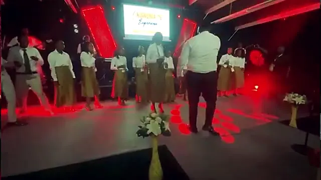

KOINONIAExperience
Once a year the whole Christ Connect family comes home to Lusaka: three days of worship, the Word and fellowship that sends us back out multiplying.
Every Koinonia Experience

PastTwo days in Ibex Hill where the family first gathered under the Koinonia name: worship, the Word, and members sharing preaching, songs, dance, poems and testimonies.
Open K24Past19 to 21 December 2025 · Grace Exploits Event Center
Open K25 Next
NextThe next gathering of the family. Dates, venue and theme will be announced here first. Tell us you are coming and we will keep you posted.
Open K26What Koinonia
means
Koinonia is the New Testament word for fellowship: sharing life, not just a room. "They devoted themselves to the apostles' teaching and to fellowship." Acts 2:42. The conference exists so that churches spread across borders remember they are one body, go deep in the Word together, and go home to multiply.
From K25


Come home
this December.
Koinonia is where the family remembers it is one body. Whether you belong to a CCFC church or you are curious, there is a seat for you at K26.